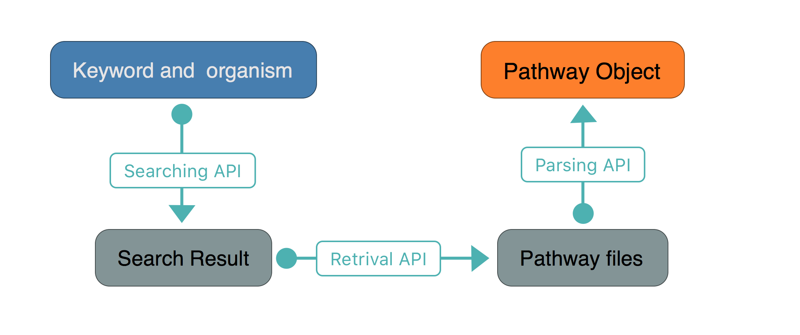
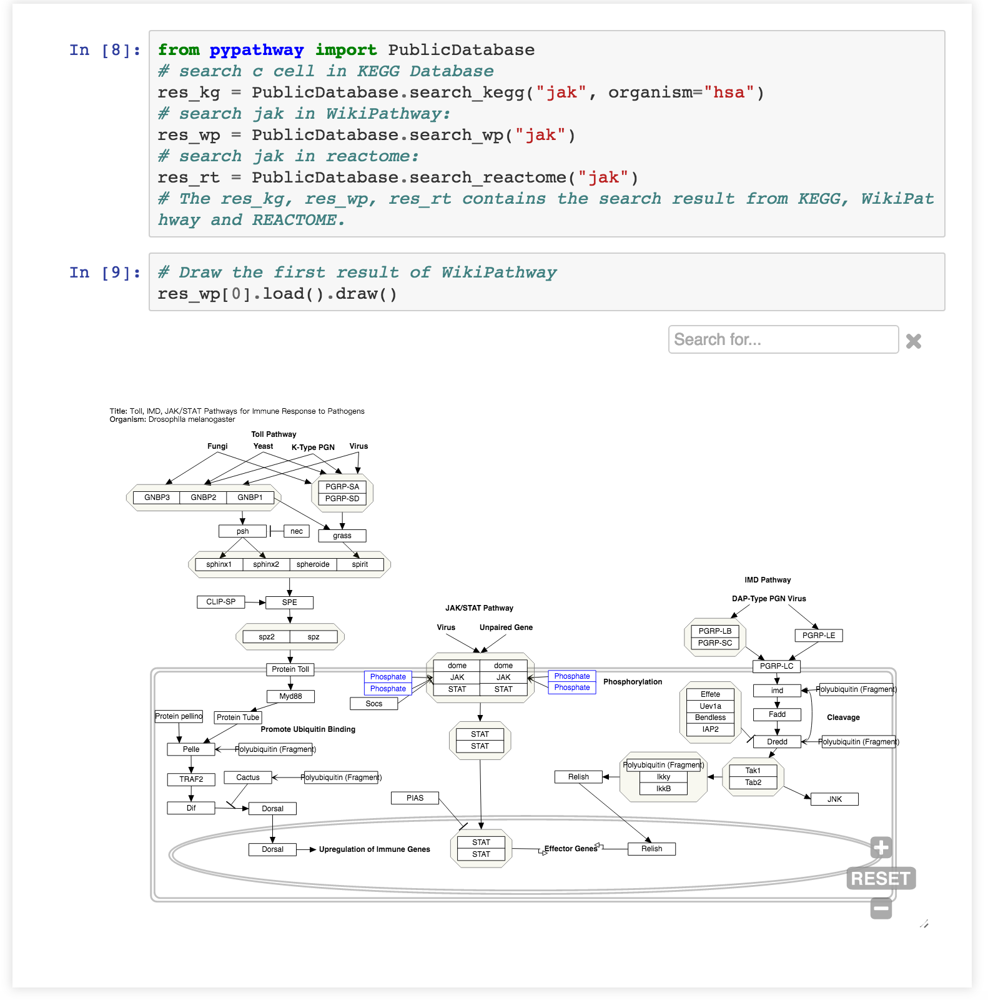
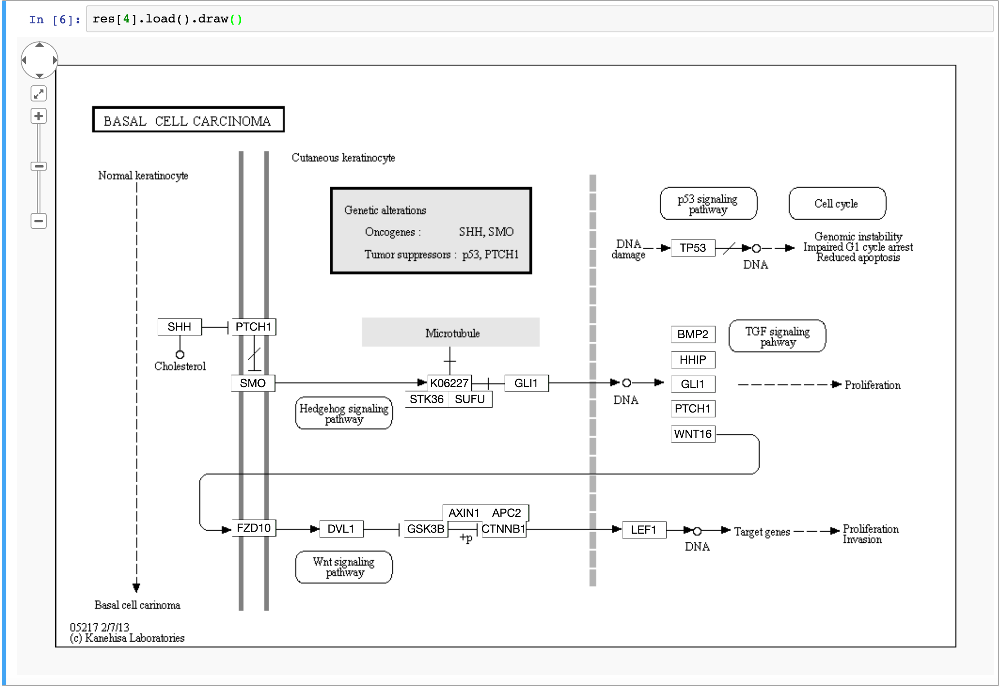
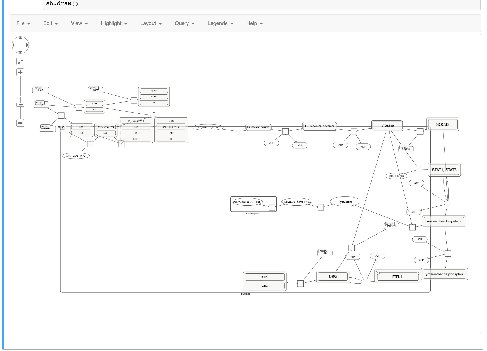
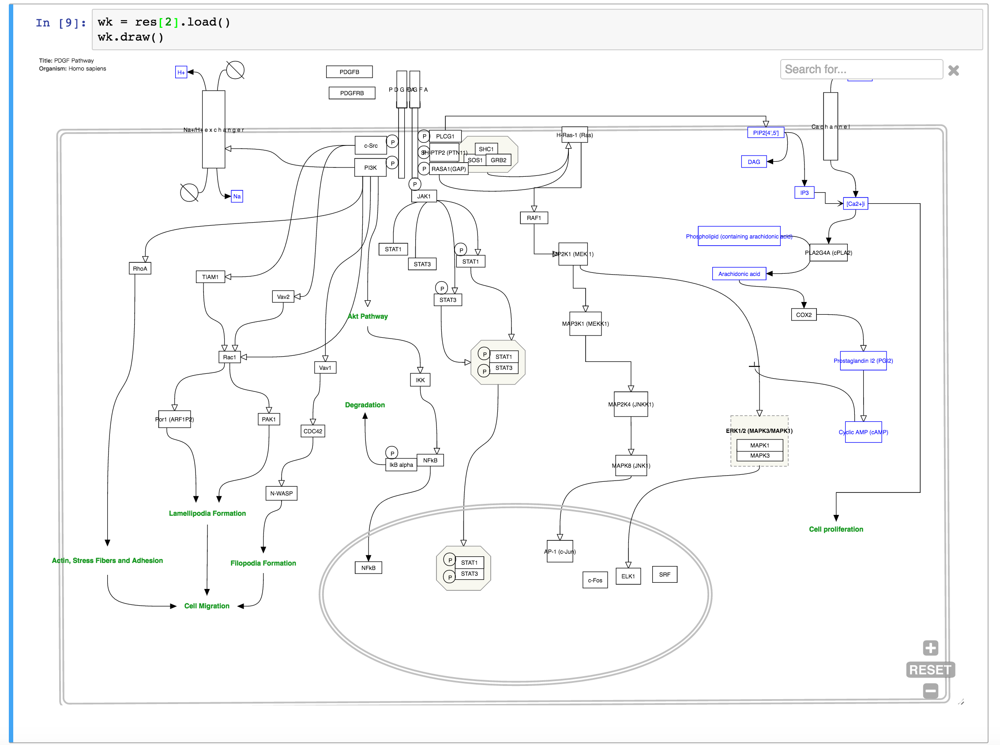
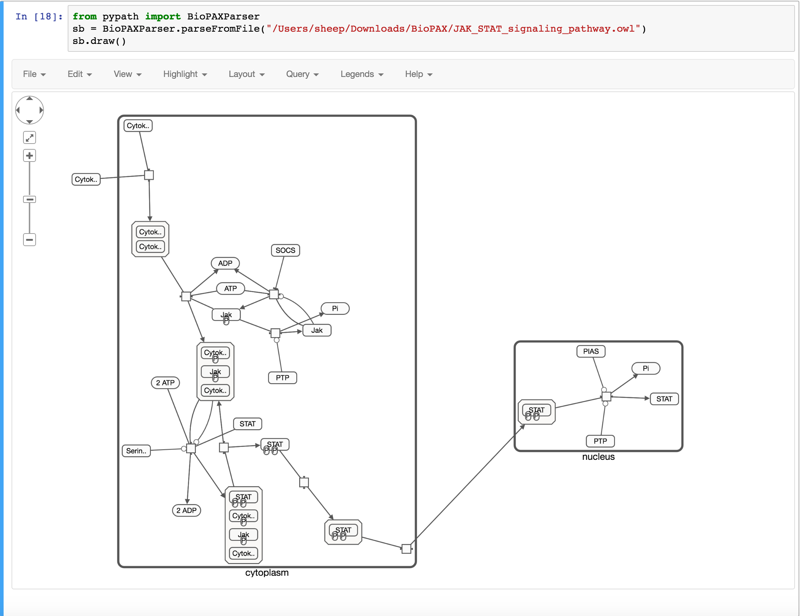
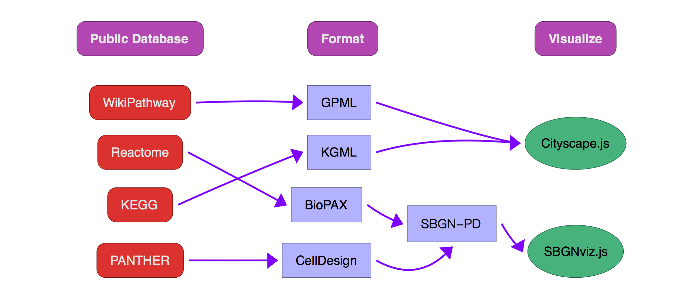

Query pathway data from public databases
Overview
This figure shows how Searching and Retrival API works

- The
Searching APIis implemented in classPublicDatabasewith staticmethodsearch_kegg,search_wpandsearch_reactome. - The
Retrival APIandParsing APIis done withload()method of classSearchResult, you can directly use it at result of Searching API.
First case
Note
This is a record of IPython notebook. If not emphasized, all example using IPython notebook.

Supported Public Databases
There are three public databases we support: KEGG, Reactome and the WikiPathway, which may satisfy most of the requirement.
The supported databases are defined in the class SupportedDatabase
class SupportedDatabase: ''' This class lists the database we support currently ''' KEGG = 'kegg' REACTOME = 'reactome' WikiPathways = 'wikipathways'
Supported Pathway Format
We support four main stream data format: BioPAX, SBGN-PD, GPML and KGML. First two are community support open source format, GPML is used by WikiPathway, and last one is defined by KEGG.
The supported data formats are defined in the class PathwayFormat
class PathwayFormat: ''' This class list the format we support currently ''' BioPAX = "BIOPAX" KGML = "KGML" SBGN = "SBGN" GPML = "GPML"
Search pathway
search pathway in KEGG
- The static method
search_keggin the classPublicDatabase, with an argumentkeywordand a optional argumentorganism, is used for searching in KEGG.
# if no organism is assigned, the reference pathway, ko, is used as default value. res = PublicDatabase.search_kegg("b cell")
- The
resultobject is a list of instances ofKEGGPathwayDatacontaining the results of this query. If the result is empty, it will return a empty list. Useprintto see the info.
print res >> [format: KGML id: 04112 description: Cell cycle - Caulobacter hasData: True, format: KGML id: 04662 description: B cell receptor signaling pathway hasData: True, format: KGML id: 05100 description: Bacterial invasion of epithelial cells hasData: True, format: KGML id: 05120 description: Epithelial cell signaling in Helicobacter pylori infection hasData: True, format: KGML id: 05217 description: Basal cell carcinoma hasData: True]
- Quickly parse and view the pathway.
we provide a
load()method which returns a kegg pathway object:
res[0].load().draw() # aka. KEGGParser.parse(res[4].kgml).draw()
- Then module will draw a pathway:

Search Reactome
Reactome provides a pretty good pathway browser, which is more interactive than other traditional pathway databases. We use SBGN and BioPAX file to generate the pathway plotting.
- as usual, use
PublicDatabase.search_reactometo search database
PublicDatabase.search_reactome("t cell")
- the result is also saved in a
listobject and you can directly view it.
>>> [source: [u'http://pathwaycommons.org/pc2/reactome'] id: http://identifiers.org/reactome/R-HSA-983705 BioPAX: False SBGN-PD: False description:B Cell Activation, source: [u'http://pathwaycommons.org/pc2/reactome'] id: http://identifiers.org/reactome/R-HSA-68884 BioPAX: False SBGN-PD: False description:cell division, ... source: [u'http://pathwaycommons.org/pc2/reactome'] id: http://identifiers.org/reactome/R-HSA-421270 BioPAX: False SBGN-PD: False description:Cell-cell junction organization]
- Then use load() to parse the pathway to the memory and plot the pathway
res[1].load().draw()
- finally we get a result in the output area.

Search WikiPathway databases
We use the Pathway Common database’s RESTful API. But the procedure is same as the KEGG searching:
- The static method
search_wpin the classPublicDatabase, with an argumentkeywordand a optional argumentspecies(WikiPathway says it species, different from KEGG).
res = PublicDatabase.search_wp("jak")
- Result is stored in a list of
WikiPathwayDatainstances. Use print to see the detail:
print res >>> [ id: WP2593 name: JAK/STAT species: Homo sapiens revision: 86961 hasData: True score: {u'0': u'4.593704'}, . . . id: WP75 name: Toll-like Receptor Signaling Pathway species: Homo sapiens revision: 83867 hasData: True score: {u'0': u'3.4618585'}, id: WP1449 name: Regulation of toll-like receptor signaling pathway species: Homo sapiens revision: 81172 hasData: True score: {u'0': u'3.4582481'}]
- similar to KEGG and Reactome query, quick drawing is supported:
res[4].load().draw()
draws a pathway:

Parse local file
Parsing pathway from local file is as easy as searching in public databases. Each Parser(e.g. SBGNParser, KGMLParser) provides the method parseFromFile(file_path).
For example, we load a local BioPAX file and view it:
from pypath import BioPAXParser sb = BioPAXParser.parseFromFile("/Users/sheep/Downloads/BioPAX/Isoleucine_biosynthesis.owl") sb.draw()
and get the result:

Insides
The Figure below shows the Public databases we support: WikiPathway, Reactome and KEGG. After retrieving pathway from these databases, pypathway handle the these pathway data in two different way:
BioPAX,SBGN-PD: convert toSBGN-PDand visualization usesSBGNviz.js.KGML,GPML: use their own data structures and visualize it usingpvjsandCytoscape.js.

figure 1: technical workflow of public database querying and format handling.
- After parsing raw pathway data to pathway object, you can use
draw()method to view your pathway (it is awebappintegrated inIPython notebook):
Note
Whether the format and the visualization method changes or not, the Data Integration API remains same.